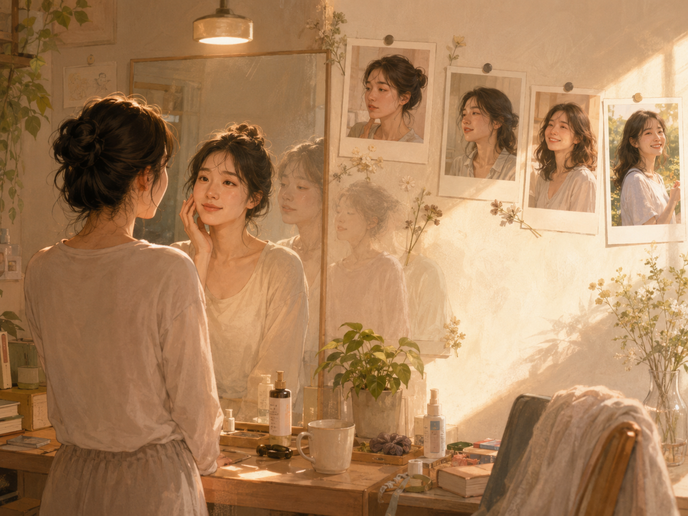

오늘도 제일 예쁜 날

오늘 조금 뚱뚱해 보여도 괜찮다.
거울을 보다가 배가 조금 더 나온 것 같고, 사진을 찍었는데 얼굴이 마음에 들지 않고, 옷이 예전보다 덜 잘 어울리는 것처럼 느껴질 수도 있다.
그래도 괜찮다.
어차피 일주일 뒤에 보면 그 사진은 예뻐진다.
오늘 찍은 사진을 바로 보면 마음에 들지 않는다. 표정이 이상한 것 같고, 얼굴이 부은 것 같고, 자세도 어색해 보인다. 몇 장을 넘겨봐도 굳이 저장하고 싶지 않은 사진만 가득한 것처럼 느껴진다.
그런데 일주일쯤 지나 다시 보면 조금 다르다.
그날 거울 속에서 보던 나보다 사진 속 내가 꽤 괜찮아 보인다.
몇 달이 지나면 더 이상하다.
그때는 왜 그렇게 마음에 안 들어 했는지 잘 모르겠다.
몇 년 전 사진을 보면 더 확실하다.
사진 속 나는 너무 날씬하고 예쁘다. 당시에는 분명 살이 쪘다고 생각했을 것이고, 얼굴이 마음에 들지 않는다고 투덜거렸을 텐데 지금 보면 그런 것은 전혀 보이지 않는다.
그래서 생각한다.
오늘 뚱뚱해도 괜찮잖아!
사진이 마음에 들지 않아도 찍어둬. 어차피 괜찮아지거든.
배가 조금 나와도 웃는다. 어차피 괜찮아지거든.
오늘 입은 옷이 완벽하지 않아도 괜찮다. 어차피 괜찮아진다.
몸은 계속 달라지고, 얼굴도 달라지고, 내가 나를 바라보는 기준도 계속 바뀐다.
그러니 오늘의 모습을 너무 엄격하게 심사할 필요는 없는 것 같다.
오늘의 나는 언젠가 내가 다시 보고 싶어 할 사람이다.
오늘 조금 뚱뚱해도 괜찮다.
오늘 사진이 마음에 들지 않아도 괜찮다.
시간이 지나면 나는 또 지금의 나를 예뻐할 것이다.
그러니까 굳이 기다리지 않기로 한다.
오늘 나는 세상에서 제일 예쁘다.